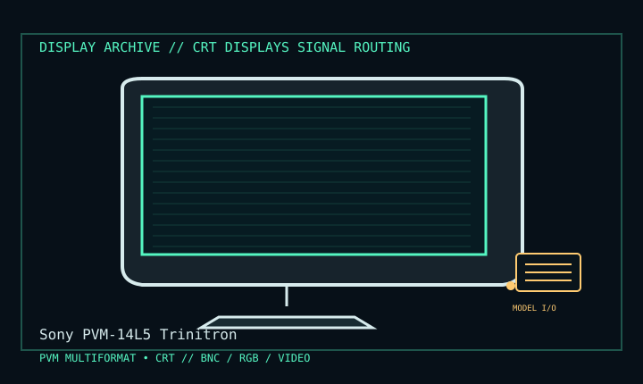

[ INDIVIDUAL COMPONENT // DISPLAY ARCHIVE ]
Sony PVM-14L5 Trinitron
14-inch professional multiformat broadcast CRT, 2000s.

IDENTIFICATION: Match the exact model suffix, region and installed option boards to the cited manual and rear label. Do not infer electrical compatibility from connector shape.
Model-specific specifications
| Catalog class | Crt Displays |
|---|---|
| Exact product | Sony PVM-14L5 Trinitron |
| Era / purpose | 14-inch professional multiformat broadcast CRT, 2000s. |
| Tube / image | 14-inch 4:3 HR Trinitron color CRT, about 13-inch viewable; Sony specifies up to 800 horizontal TV lines, not computer pixels. |
| Format support | Multiformat SD/HD analog display including 480i/60, 575i/50, 480p/60, 575p/50, 720p/60 and 1080i/60 formats listed in operating documentation. |
| Inputs | BNC composite, Y/C, component/RGB and external sync paths; option boards expand supported SDI formats. Treat installed slot boards as part of the unit identity. |
| Power / mechanics | 100–240 V AC, 50/60 Hz; maximum power about 70 W in the operating specification. Approx. 326 × 316 × 399 mm, 17 kg. |
Revision, timing & host compatibility
PVM is a video monitor, not a PC VGA display. Match interlaced/progressive format, color-space/component assignment and external sync; a BNC connector alone does not identify signal type. SDI is available only if the correct optional board is installed. Confirm 14L5 rather than 20L5 and record option-board part numbers.
Before operation, compare source signal type, scan/frame timing, pinout, interface bandwidth, input-board configuration and mains/DC rating against the model-specific manual and nameplate. A listed maximum mode is not a promise of optimum image quality.
Vintage preservation & repair notes
Preserve option cards, BNC caps, stand and calibration/service history. Inspect phosphor burn, convergence, color balance and geometry at each format. CRT high voltage and broadcast calibration hazards require qualified service and Sony’s exact manual.
Record serial/date code, configuration, all installed interface boards, accessories, image condition, calibration state, test source and document edition. Disconnect power before external cleaning and use only the manufacturer-approved procedure; do not open CRT/LCD/OLED equipment without qualified service practice.
Manufacturer manuals & specifications
- Sony PVM-14L5 / PVM-20L5 Operating InstructionsManufacturer operating manual scan; identifies multiformat setup and controls.
- Sony PVM-14L5 Service ManualService reference for the PVM-14L5 chassis and service configuration.